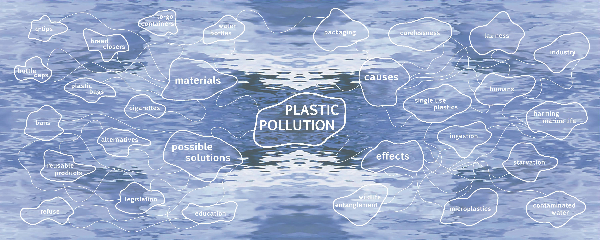

Amanda Grate

This piece was created in thes fall of 2021 in response to the plastic pollution in our oceans. I've become very passionate about the environemnt and try my best to preserve what beautty the earth has left. I've become more aware of my personal plastic consumption and hope this inspires others to be more aware as well. After doing some research I was inspired by the look of a net and plastic bags in the ocean particularly. The lines connecting each word/phrase is used to mimic the look and feel of netting. A similar effect was added to the abstract shapes with the words and phrases by adding the slightest white transparency to mimc plastic bags.
blah